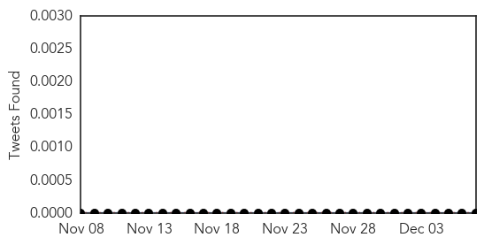

Influenza
30-Day Web Trend
6 alerts, 0 warnings

30-Day Twitter Trend
1 alerts, 0 warnings

Article Locations

Article Confidences

Top Articles:
- 0.996
- Vaccination push continues as flu appears in Kansas
- 0.981
- Larimer flu hospitalizations soar; some classes canceled
- 0.866
- 7 countries impose restrictions on Canadian poultry due to avian influenza
- 0.841
- Fifth BC Farm Under Quarantine for Avian Flu
- 0.754
- 5th British Columbia farm under quarantine due to bird flu
- 0.552
- Fifth B.C. farm quarantined due to avian flu
- 0.507
- MP vigilant to prevent bird flu
Top Tweets:
-
No tweets found for Dec 07, 2014
Hepatitis
30-Day Web Trend
2 alerts, 0 warnings
30-Day Twitter Trend
0 alerts, 0 warnings

Article Locations
Article Confidences

Top Articles:
Top Tweets:
-
No tweets found for Dec 07, 2014